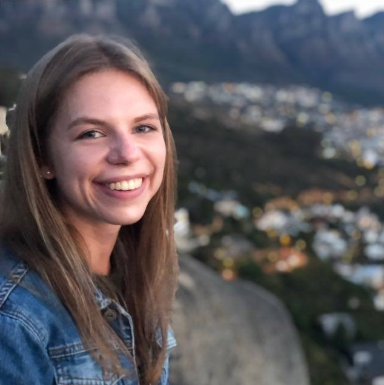

|
Sophie Ostmeier
I am a CS master's student and research assistant at Stanford University, where I work at the AIMI Center.
From 2023 to 2025 I was funded by the German Research Foundation (DFG). Before Stanford, I completed an M.D. and Dr.med. at the Technical University of Munich.
Email / Google Scholar / Stanford Profile / Github / LinkedIn |
 |
{kind=link}
Research
My research focuses on how machine-learning models learn, make predictions and how we measure that, with a current emphasis on vision and/or language models. I am also curious about reinforcement learning as a path toward intelligent decision-making systems and wonder how they would do medicine. |
Some recent papers (Google Scholar) |
|
LieRE: Lie Rotational Positional Encodings
Sophie Ostmeier, Brian Axelrod, Maya Varma, Michael Moseley, Akshay Chaudhari, Curtis Langlotz, ICML, 2025 / arXiv We extend the rotational positional encodings widely used in large language models to high-dimensional rotation matrices by exploiting their Lie-group structure, and we test this approach on both 2-D and 3-D vision tasks. |
|


|
GREEN: Generative Radiology Report Evaluation and Error Notation
Sophie Ostmeier,Justin Xu, Zhihong Chen, Maya Varma, Louis Blankemeier, Christian Bluethgen, Arne Edward Michalson, Michael Moseley, Curtis Langlotz, Akshay Chaudhari, Jean-Benoit Delbrouck, EMNLP, Findings, 2024 project website / data / model We present GREEN, an open-source metric that employs language models to spot and explain clinically significant errors in radiology reports, yielding expert-aligned scores, interpretable feedback, and commercial-grade performance. |

|
USE-Evaluator: Performance metrics for medical image segmentation models supervised by uncertain, small or empty reference annotations
Sophie Ostmeier, Brian Axelrod, Fabian Isensee, Jeroen Bertels, Michael Mlynash, Soren Christensen, Maarten G Lansberg, Gregory W Albers, Rajen Sheth, Benjamin FJ Verhaaren, Abdelkader Mahammedi, Li-Jia Li, Greg Zaharchuk, Jeremy J Heit Medical Image Analysis, 2023 arXiv / code We investigate evaluation metrics for medical image segmentation that account for uncertainty, small structures, and empty reference annotations. |
Miscellaneous |
Academic Service |
Co-Organizer of Workshop on Multimodal LLMs in clinical Practice (MICCAI 2025), Speaker at Foundation to Multimodal Models for Medical Imaging (FMLLM) Tutorial (MICCAI 2025), Reviewer (ICLR 2026) |
Teaching |
Lecturer, Stanford BioE 224, "AI in medical imaging" (2024, 2025) , Stanford AIMI Center Summer Camp Mentor (2024, 2025) , Stanford Small Science Groups (2023) |
|
Website Template source code. |